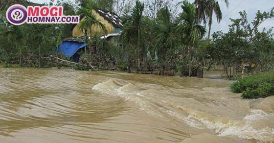
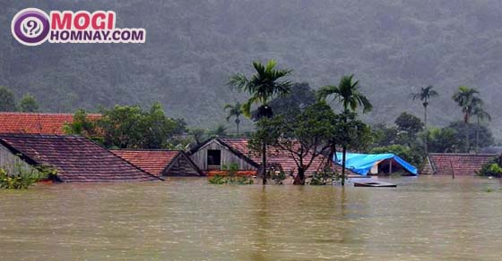
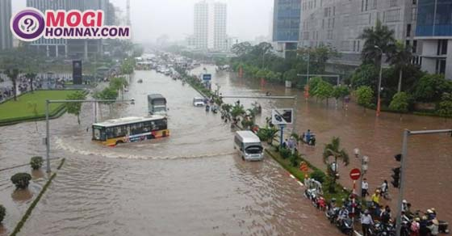

Nằm mơ thấy lũ lụt là điềm lành hay dữ? Đánh con gì?
- Quảng Ninh: xe khách bị container đè bẹp, nhiều người thương vong
- Lào Cai: Xe cẩu lao xuống vực, 2 người mắc kẹt trong cabin
- Mơ thấy chó chết là điềm gì? Nằm mơ thấy chó chết đánh con gì?
- Đồng Nai: Người phụ nữ tử vong ngay khi va chạm với xe Ben
- Nằm mơ thấy cà phê đánh con gì? Chiêm bao thấy cà phê điềm gì?
Bạn nằm mơ thấy lũ lụt rất lớn, nước lụt tràn ngập khắp mọi noi là có ý nghĩa gì? Giấc mơ thấy lũ lụt mang đến cho bạn điềm báo gì? Lành hay dữ? Đánh con gì để được may mắn? Hãy cùng chúng tôi đi giải mã thật chi tiết giấc mơ thấy lũ lụt dưới đây nhé.
1. Ý nghĩa giấc mơ thấy lũ lụt

Ý nghĩa giấc mơ thấy lũ lụt
Lũ lụt là hiện tượng mọi thứ bị bao phủ bởi nước, chìm ngập trong nước. Lũ gây nguy hiểm và thiệt hại lớn về tài sản cũng như gây thương vong cho con người.
Nếu bạn thấy lũ lụt xuất hiện trong giấc mơ thường là một dấu hiệu xấu, tượng trưng cho thiệt hại hoặc phá hủy tài sản của bạn hoặc cái gì đó có giá trị. Chiêm bao thấy lũ lụt thường khiến cho người nằm mơ cảm thấy khó chịu, không kiểm soát được. Đa phần những giấc mơ này thường tiết lộ những cảm xúc hiện tại của bạn.
Đồng thời, giấc mơ thấy lũ lụt cũng cho thấy tình hình sức khỏe của bạn. Nếu bạn thấy hình ảnh lũ lụt dữ dội và nguy hiểm cho thấy bạn đang có một thời kì hỗn loạn trong cuộc sống.
Tuy nhiên, mỗi giấc mơ khác nhau cùng với những chi tiết và bối cảnh khác nhau sẽ có những điềm báo khác nhau cho bạn. Bên cạnh những điềm báo xấu, nó cũng có những điềm báo tốt nên bạn cũng đừng quá lo lắng nhé.
Dưới đây hãy cùng theo dõi những giải mã giấc mơ được chính các chuyên gia của chúng tôi nghiên cứu để giúp bạn biết được những bí ẩn phía sau giấc mơ thấy lũ lụt của bạn là gì, mời các bạn cùng theo dõi.
2. Giải mã giấc mơ thấy lũ lụt là điềm báo tốt hay xấu?

Giải mộng giấc mơ thấy lũ lụt là điềm báo gì?
Mỗi giấc mơ sẽ có những điềm báo khác nhau cho bạn, vì thế nếu bạn nhớ được giấc mơ càng chi tiết thì việc giải mã càng trở nên chính xác hơn. Hãy theo dõi dưới đây để có được câu trả lời cho giấc mơ của bạn nhé.
Mơ thấy lũ lụt
Nếu bạn nằm mơ thấy một trận lũ lụt chung chung thì giấc mơ đó có thể tượng trưng cho một điều gì đó quá mức, với một số lượng lớn đi vào cuộc sống của bạn. Sự dư thừa đó có thể là tốt hoặc xấu. Chẳng hạn, bạn có thể kiếm được nhiều tiền trong tương lai gần nhưng cuộc sống của bạn có thể bị xáo trộn bởi lo lắng và công việc.
Nằm mơ thấy lũ dữ dội
Nếu bạn thấy một trận lụt dữ dỗi đang hoành hành trong mơ của bạn đồng nghĩa với việc bạn đang gặp phải những vấn đề trong tình cảm. Có điều gì đó khiến cho bạn bức xúc trong những ngày qua mà không thể nào thoát ra được nó. Mớ cảm xúc hỗn độn khiến cho bạn cảm thấy ngạt thở vô cùng. Lúc này bạn cần mạnh mẽ để nói ra hết tất cả, giải quyết mọi vấn đề mà bạn đang gặp phải dù đó là người yêu, bạn bè hoặc người thân của bạn. Khi bạn nói ra được bạn sẽ cảm thấy dễ chịu hơn rất nhiều đấy.
Còn nếu bạn là người đang yêu đơn phương mà nằm mơ thấy trận lũ dữ dội thì ngay lập tức hãy thổ lộ tình cảm của bạn với người đó. Dù kết quả có ra sao thì bạn hãy mạnh mẽ đối diện, đây chính là cơ hội tốt nhất cho bạn đó.
Chiêm bao thấy lũ tràn vào nhà
Giấc mơ ám chỉ tình hình diễn ra trong chính căn nhà của bạn, gia đình bạn đang gặp phải những khó khăn, đặc biệt là về tài chính.
Ở một khía cạnh khác giấc mơ cũng ám chỉ tinh thần của bạn gần đây không được bình thường, bạn đang có quá nhiều cảm xúc bị chi phối. Lúc này bạn cần tập trung giải quyết từng vấn đề để mọi việc có thể được đơn giản hơn và bạn sẽ không còn stress như lúc đầu.
Ngủ mơ thấy dòng nước lũ nhẹ nhàng.
Giấc mơ này bạn không cần phải lo lắng quá, bởi nó là điềm báo tốt cho bạn. Giấc mơ ám chỉ bạn đang có những lo lắng được giải quyết nhanh chóng, giống như dòng nước sẽ cuốn trôi đi mọi lo lắng của bạn, đem lại cho bạn một tinh thần sảng khoái và thoải mái hơn.
Mộng thấy bạn bị lũ cuốn đi
Đây là điềm báo xấu cho bạn, nhắc nhỏ bạn nên chú ý đến những phúc lợi của bản thân, tránh để bị người khác tranh giành mất những gì mà bạn xứng đáng được hưởng. Giấc mơ cũng là lời cảnh báo đến sức khỏe của bạn cần được bạn chú ý hơn.
Một vài trường hợp, giấc mơ chỉ ra sự trì trệ trong công việc của bạn, đôi khi giấc mơ lại cho thấy bạn đang làm phiền người khác bằng những hành động và thái độ không tốt của bạn.
Chiêm bao thấy lũ cuốn trôi người khác
Giấc mơ tượng trưng cho những thử thách và trở ngại bạn sẽ sớm gặp phải. Giấc mơ có thể biểu thị sự thất vọng của bạn cùng với sự mất mát lớn.
Một vài giấc mơ thấy lũ khác:
- Mơ thấy bạn thoát khỏi trận lũ: điềm báo tốt, bạn có khả năng giải quyết được những vấn đề mà bạn gặp phải
- Nằm mơ thấy nhà của bạn bị lũ phá hủy: giấc mơ chỉ ra những tranh luận và xung đột của bạn với các thành viên trong gia đình. Hãy giải quyết những vấn đề mà bạn đang gặp phải với những người thân yêu.
- Mơ thấy thành phố bị chìm trong nước lũ: ám chỉ những điều tồi tệ sớm sẽ xảy ra trong cuộc sống của bạn, khiến bạn đau khổ và buồn chán.
Mỗi giấc mơ sẽ mang đến cho bạn những điềm báo khác nhau cùng với những con số khác nhau. Hãy cùng xem giấc mơ của bạn có con số nào may mắn nhé.
Xem thêm: Mơ thấy cho con bú là điềm tốt hay xấu? Đánh con gì?
3. Nằm mơ thấy lũ lụt đánh con gì?

Nằm mơ thấy lũ lụt đánh con gì may mắn?
Giấc mơ nào cũng tương ứng với những con số, giấc mơ thấy lũ lụt cũng vậy. Hãy thử vận may của mình với những con số thông qua giấc mơ của bạn nhé.
- Mơ thấy nước lũ lụt đánh số 67 – 68
- Nằm mơ thấy nước lụt ngập nhà mình là số 16 – 61
- Ngủ mơ thấy nước lụt ngập đường tràn khắp nơi đánh số 11 – 69
- Chiêm bao thấy nước lũ dâng cao đánh số 29
- Mơ thấy mình bị lũ cuốn trôi là số 41
- Mơ thấy lũ lụt đang tiến về phía mình là số 12 – 14
- Nằm mơ thấy lũ đến bất ngờ đánh số 35 – 89
- Chiêm bao thấy mình đang ngồi trên thuyền ở dòng lũ đánh số 14
Trên đây là giải mã giấc mơ thấy lũ lụt để bạn biết được điềm báo cũng như các con số may mắn cho bạn. Hãy thử vận may của mình với các con số, biết đâu bạn sẽ trúng được giải thưởng lớn giá trị thì sao. Ngoài ra, để cập nhật cho mình nhanh nhất các dự đoán con số may mắn mỗi ngày và giải mã hàng ngàn giấc mơ của bạn hãy truy cập ngay Sổ mơ ngay hôm nay nhé. Chúc các bạn may mắn!